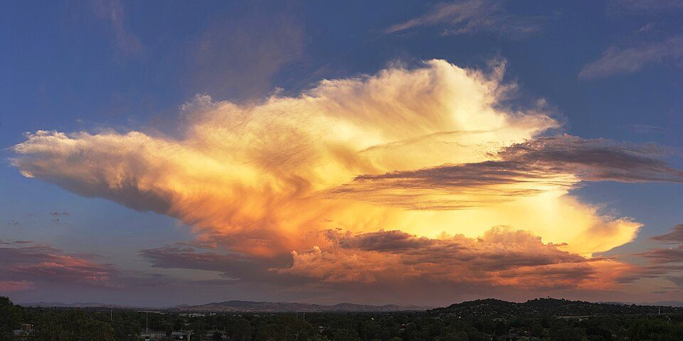

Planeta Tierra · 6 fichas
Atmósfera y clima
El aire que nos protege, las nubes y el tiempo, tormentas y huracanes, los climas del mundo, el cambio climático y los espectáculos de luz del cielo.
Una capa de gas tan fina que, vista desde la Estación Espacial, parece un halo azul sobre el horizonte. Ella nos da el aire, filtra la radiación, reparte el calor y fabrica el tiempo de cada día. Esta sección explica cómo funciona y cómo la estamos cambiando.
- La atmósferaDe qué está hecho el aire, sus cinco capas, la capa de ozono y por qué el cielo es azul.

El tiempo y las nubesCómo se forman las nubes y la lluvia, cómo se predice el tiempo y los récords de calor y frío del planeta y de España. Tormentas, huracanes y tornadosRayos cinco veces más calientes que el Sol, huracanes del tamaño de un país y danas que descargan en horas la lluvia de un año.
Tormentas, huracanes y tornadosRayos cinco veces más calientes que el Sol, huracanes del tamaño de un país y danas que descargan en horas la lluvia de un año. Los climas del mundoPor qué hay estaciones, los grandes tipos de clima de la Tierra, los lugares más lluviosos y secos y la enorme variedad climática de España.
Los climas del mundoPor qué hay estaciones, los grandes tipos de clima de la Tierra, los lugares más lluviosos y secos y la enorme variedad climática de España. El cambio climáticoLa Tierra se ha calentado más de 1,2 °C desde la era preindustrial por los gases que emitimos. Las pruebas, las consecuencias y las soluciones.
El cambio climáticoLa Tierra se ha calentado más de 1,2 °C desde la era preindustrial por los gases que emitimos. Las pruebas, las consecuencias y las soluciones. Auroras, arcoíris y luces del cieloAuroras boreales, arcoíris dobles, halos, rayo verde y espejismos: la física detrás de los espectáculos de luz de la atmósfera.
Auroras, arcoíris y luces del cieloAuroras boreales, arcoíris dobles, halos, rayo verde y espejismos: la física detrás de los espectáculos de luz de la atmósfera.